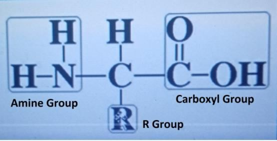

Introduction
ভূমিকা
The Surah is a nice deliberation of Today, Tomorrow, and the Day after Tomorrow.
সূরাটি আজকের, আগামীকাল এবং পরশুর একটি সুন্দর আলোচনা।
Flowchart
ফ্লোচার্ট
Segment-1: Today
সেগমেন্ট-১: আজ
Section 1 [Verse 1-4]: Gracious God Section 2 [Verse 5-9]: Fall not short in the Balance Section 3 [Verse 10-25]: The Passing Days
অধ্যায় 1 [আয়াত 1-4]: করুণাময় ঈশ্বর অধ্যায় 2 [পদ 5-9]: ভারসাম্য অধ্যায় 3 [আয়াত 10-25]: অতিবাহিত দিনগুলিতে কম না পড়ুন
Segment-2: Tomorrow
সেগমেন্ট-2: আগামীকাল
Section 4 [Verse 26-30]: The Doomsday Section 5 [Verse 31-32]: The Judgment Day
অধ্যায় 4 [আয়াত 26-30]: দ্য ডুমসডে সেকশন 5 [আয়াত 31-32]: বিচারের দিন
Segment-3: Day after Tomorrow
সেগমেন্ট-3: পরশু
Section 6 [Verse 33-45]: Days in the Hell Section 7 [Verse 46-77]: Days in the Jannaat
ধারা 6 [আয়াত 33-45]: জাহান্নামের দিন ধারা 7 [আয়াত 46-77]: জান্নাতের দিনগুলি
Segment-4: Conclusion
সেগমেন্ট-4: উপসংহার
Section 8 [Verse 78]: Conclusion Tafsir of the Surah Segment-1 Today
ধারা 8 [আয়াত 78]: আজ সূরা সেগমেন্ট-1 এর উপসংহার তাফসির
Section 1 of Chapter 55 [Verse 1-4]: Gracious God
অধ্যায় 55 এর অধ্যায় 1 [পদ 1-4]: করুণাময় ঈশ্বর
Most Gracious! It is He Who has taught the Qur'an. He has created man; He has taught him to talk.
পরম করুণাময়! তিনিই কুরআন শিক্ষা দিয়েছেন। তিনি মানুষকে সৃষ্টি করেছেন; তাকে কথা বলতে শিখিয়েছে।
Remarks:
মন্তব্য:
A human is created with a suitable tongue, teeth, lips, nose, throat, lungs, and other structures that enable speech. Innumerable nerves connect the muscles to the highly developed brain to coordinate the actions required for talking. This is not a simple design. We possess fully developed languages. Inspiration may arise from the inherent emotions of the nafs (soul). The brain translates this inspiration into language and generates corresponding commands for the muscles. These commands are transmitted through the nerves, which coordinate the movement of the tongue, teeth, lips, nose, throat, lungs, and other structures, all working together at high speeds to produce words through the mouth. Allah is far greater than that we can think. Section 2 of Chapter 55 [Verse 5-9]: Fall not short in the Balance
একজন মানুষকে উপযুক্ত জিহ্বা, দাঁত, ঠোঁট, নাক, গলা, ফুসফুস এবং অন্যান্য কাঠামো দিয়ে তৈরি করা হয় যা বক্তৃতা করতে সক্ষম। অসংখ্য স্নায়ু পেশীগুলিকে উচ্চ বিকশিত মস্তিষ্কের সাথে সংযুক্ত করে কথা বলার জন্য প্রয়োজনীয় ক্রিয়াগুলির সমন্বয় সাধনের জন্য। এটি একটি সাধারণ নকশা নয়। আমাদের সম্পূর্ণ উন্নত ভাষা আছে। অনুপ্রেরণা নফস (আত্মা) এর অন্তর্নিহিত আবেগ থেকে উদ্ভূত হতে পারে। মস্তিষ্ক এই অনুপ্রেরণাকে ভাষায় অনুবাদ করে এবং পেশীগুলির জন্য সংশ্লিষ্ট আদেশ তৈরি করে। এই আদেশগুলি স্নায়ুর মাধ্যমে প্রেরণ করা হয়, যা জিহ্বা, দাঁত, ঠোঁট, নাক, গলা, ফুসফুস এবং অন্যান্য কাঠামোর নড়াচড়ার সমন্বয় করে, মুখের মাধ্যমে শব্দ উৎপন্ন করার জন্য উচ্চ গতিতে একসাথে কাজ করে। আমরা যা ভাবতে পারি আল্লাহ তার চেয়ে অনেক বড়। অধ্যায় 55 এর অধ্যায় 2 [পদ 5-9]: ভারসাম্যের অভাব হবে না
The sun and the moon follow courses computed and the herbs and the trees both bow in adoration. And the Sky has He raised, and He has set up the balance, in order that ye may not transgress balance. So, establish weight with justice and fall not short in the balance.
সূর্য এবং চন্দ্র গণনা করা কোর্স অনুসরণ করে এবং ভেষজ এবং গাছ উভয়ই প্রণাম করে। আর আকাশ তিনি তুলেছেন এবং ভারসাম্য স্থাপন করেছেন যাতে তোমরা ভারসাম্য লঙ্ঘন না কর। সুতরাং, ন্যায়ের সাথে ওজন স্থাপন করুন এবং ভারসাম্যে কম পড়বেন না।
Section 3 of Chapter 55 [Verse 10-25]: The Passing Days
অধ্যায় 55 এর অধ্যায় 3 [পদ 10-25]: অতিবাহিত দিনগুলি
It is He Who has spread out the land for creatures. Therein is fruit, and date-palms producing spathes, also corn with leaves and stalk for fodder, and sweet-smelling plants. Then which of the favors of your Lord will ye deny? He created man from splendid sauce (salsalin kal fakhari).
তিনিই সৃষ্টির জন্য জমি বিছিয়ে দিয়েছেন। এর মধ্যে রয়েছে ফল এবং খেজুর গাছের স্প্যাথ, এছাড়াও ভুট্টা এবং পাতা এবং ডাঁটা এবং মিষ্টি গন্ধযুক্ত গাছপালা। তাহলে তোমরা তোমাদের পালনকর্তার কোন কোন অনুগ্রহকে অস্বীকার করবে? তিনি মানুষকে সৃষ্টি করেছেন চমৎকার সস (সালসালিন কাল ফাখারি) থেকে।
Remarks:
মন্তব্য:
In the above verse, 'salsalin kal fakhari' is typically translated as 'sounding clay like unto pottery'. However, 'salsa' actually means 'sauce', and 'fakhari' means 'proud', 'splendid', or similar terms. Therefore, I have translated 'salsalin kal fakhari' as 'splendid sauce'; it can also be translated as 'proud sauce'. Why the sauce is splendid / proud? The basic ingredient in creating a human is amino acids, which can be likened to sauce. A form of it is available in the market. FIGURE 55.1: Amino Acid (‗salsalin kal fakhari‘)

চিত্র 55_1 / Figure 55_1
উপরের আয়াতে, 'সালসালিন কাল ফাখারি'কে সাধারণত 'মৃৎপাত্রের মতো শব্দ করা কাদামাটি' হিসেবে অনুবাদ করা হয়েছে। যাইহোক, 'সালসা' আসলে 'সস' মানে, এবং 'ফাখারি' মানে 'গর্বিত', 'জাঁকজমকপূর্ণ' বা অনুরূপ পদ। অতএব, আমি 'সালসালিন কাল ফাখারি' অনুবাদ করেছি 'অপূর্ব সস'; এটি 'গর্বিত সস' হিসাবেও অনুবাদ করা যেতে পারে। সস কেন জাঁকজমকপূর্ণ / গর্বিত? একটি মানুষ তৈরির মৌলিক উপাদান হল অ্যামিনো অ্যাসিড, যা সসের সাথে তুলনা করা যেতে পারে। এর একটি রূপ বাজারে পাওয়া যায়। চিত্র 55.1: অ্যামিনো অ্যাসিড ('সালসালিন কাল ফাখারি')
চিত্র 55_1 / Figure 55_1
The sauce (amino acid) is described as proud or splendid because of its remarkable qualities. Each amino acid consists of a central carbon, which is bonded to an amine group (NH2), a carboxyl group (COOH), a hydrogen atom, and an R group. The R group varies, leading to the production of 20 different types of amino acids.
সস (অ্যামিনো অ্যাসিড) এর উল্লেখযোগ্য গুণাবলীর কারণে গর্বিত বা চমত্কার হিসাবে বর্ণনা করা হয়। প্রতিটি অ্যামিনো অ্যাসিড একটি কেন্দ্রীয় কার্বন নিয়ে গঠিত, যা একটি অ্যামাইন গ্রুপ (NH2), একটি কার্বক্সিল গ্রুপ (COOH), একটি হাইড্রোজেন পরমাণু এবং একটি R গ্রুপের সাথে যুক্ত। R গ্রুপ পরিবর্তিত হয়, যার ফলে 20টি বিভিন্ন ধরনের অ্যামিনো অ্যাসিড তৈরি হয়।
FIGURE 55.2: Generic Structure of Amino Acid

চিত্র 55_2 / Figure 55_2
চিত্র 55.2: অ্যামিনো অ্যাসিডের সাধারণ গঠন
চিত্র 55_2 / Figure 55_2
The human body is primarily made up of proteins. There are approximately 20,000 types of proteins in the body, all of which are made from the 20 types of amino acids available in a cell. The amino acids are sequenced according to mRNA as a linear chain, which is then folded into specific shapes to form a type of protein. Therefore, the amino acid is a splendid sauce that comes in 20 types and can combine to form 20,000 types of proteins. The sauce (amino acid) deserves to be proud because of its extremely broad spectrum of abilities.
মানবদেহ মূলত প্রোটিন দ্বারা গঠিত। শরীরে প্রায় 20,000 ধরনের প্রোটিন রয়েছে, যার সবকটি একটি কোষে পাওয়া 20 ধরনের অ্যামিনো অ্যাসিড থেকে তৈরি। এমআরএনএ অনুসারে অ্যামিনো অ্যাসিডগুলিকে একটি রৈখিক চেইন হিসাবে ক্রম করা হয়, যা পরে নির্দিষ্ট আকারে ভাঁজ করে এক ধরনের প্রোটিন তৈরি করে। অতএব, অ্যামিনো অ্যাসিড একটি দুর্দান্ত সস যা 20 প্রকারে আসে এবং 20,000 ধরণের প্রোটিন তৈরি করতে একত্রিত হতে পারে। সস (অ্যামিনো অ্যাসিড) অত্যন্ত বিস্তৃত ক্ষমতার কারণে গর্বিত হওয়ার যোগ্য।
And He created Jinns from the ‗prairie of fire‘ (marijin min narin). Then which of the favors of your Lord will ye deny?
আর তিনি জ্বীনদেরকে সৃষ্টি করেছেন ‘আগুনের প্রেরি’ (মারিজিন মিন নারিন) থেকে। তাহলে তোমরা তোমাদের পালনকর্তার কোন কোন অনুগ্রহকে অস্বীকার করবে?